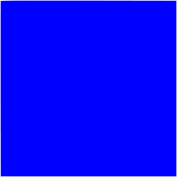

<!DOCTYPE html>
<html>
  <head>
    <title>My experiment</title>
    <script src="jspsych/dist/jspsych.js"></script>
    <script src="jspsych/dist/plugin-html-keyboard-response.js"></script>
    <script src="jspsych/dist/plugin-image-keyboard-response.js"></script>
    <script src="jspsych/dist/plugin-preload.js"></script>
    <link href="jspsych/dist/jspsych.css" rel="stylesheet" type="text/css" />
  </head>
  <body></body>
  <script>

    var jsPsych = initJsPsych({
      on_finish: function() {
        jsPsych.data.displayData();
      }
    });

    var timeline = [];

    /* preload the new images of the smaller orange circle and the blue square*/
    var preload = {
      type: jsPsychPreload,
      images: ['img/newblue.png', 'img/neworange.png']
    };
    timeline.push(preload);

    /* This will define the welcome message trial */
    var welcome = {
      type: jsPsychHtmlKeyboardResponse,
      stimulus: "Welcome to the experiment. Press any key to begin."
    };
    timeline.push(welcome);

    /* This will display the instructions along with the new images onto the screen */
    var instructions = {
      type: jsPsychHtmlKeyboardResponse,
      stimulus: `
        <p>In this experiment, a circle will appear in the center 
        of the screen.</p><p>If the shape is <strong>blue square</strong>, 
        press the letter F on the keyboard as fast as you can.</p>
        <p>If the shape is <strong>orange circle</strong>, press the letter J 
        as fast as you can.</p>
        <div style='width: 1000px;'>
          <div style='float: left;'>
              <!-- Blue square using original blue PNG, resized to 300x300px -->
              </img>
              <p class='small'><strong>Press the F key</strong></p>
            </div>
            <div style='float: right;'>
              <!-- Orange circle resized to half of the original size (150x150px) -->
              </img>
              <p class='small'><strong>Press the J key</strong></p>
            </div>
          </div>
          <p>Press any key to begin.</p>
  `       ,
        post_trial_gap: 2000
      };
      timeline.push(instructions);

    /* This will define trial stimuli array for timeline variables */
    var test_stimuli = [
      { stimulus: "img/newblue.png", correct_response: 'f' },
      { stimulus: "img/neworange.png", correct_response: 'j' } // Correctly resize the orange circle
    ];


    /* this will allow for the fixation point to show up on the screen */
    var fixation = {
      type: jsPsychHtmlKeyboardResponse,
      stimulus: '<div style="font-size:60px;">+</div>',
      choices: "NO_KEYS",
      trial_duration: function(){
        return jsPsych.randomization.sampleWithoutReplacement([250, 500, 750, 1000, 1250, 1500, 1750, 2000], 1)[0];
      },
      data: {
        task: 'fixation'
      }
    };

    /* this will allow for the images to show up on the screen along with the interactive element of pressing f or j on the keyboard*/
    var test = {
      type: jsPsychImageKeyboardResponse,
      stimulus: jsPsych.timelineVariable('stimulus'),
      choices: ['f', 'j'],
      data: {
        task: 'response',
        correct_response: jsPsych.timelineVariable('correct_response')
      },
      on_finish: function(data){
        data.correct = jsPsych.pluginAPI.compareKeys(data.response, data.correct_response);
      }
    };

    /* this will give 5 trials in a random order */
    var test_procedure = {
      timeline: [fixation, test],
      timeline_variables: test_stimuli,
      repetitions: 5,
      randomize_order: true
    };
    timeline.push(test_procedure);

    /* This will give the debrief results of the reaction time and the accuracy to the participants after the end of the experiment */
    var debrief_block = {
      type: jsPsychHtmlKeyboardResponse,
      stimulus: function() {
        var trials = jsPsych.data.get().filter({task: 'response'});
        var blue_square_trials = trials.filter({stimulus: 'img/newblue.png'});
        var orange_circle_trials = trials.filter({stimulus: 'img/neworange.png'});

        var blue_square_rt = Math.round(blue_square_trials.select('rt').mean());
        var orange_circle_rt = Math.round(orange_circle_trials.select('rt').mean());

        var blue_square_accuracy = Math.round(blue_square_trials.filter({correct: true}).count() / blue_square_trials.count() * 100);
        var orange_circle_accuracy = Math.round(orange_circle_trials.filter({correct: true}).count() / orange_circle_trials.count() * 100);

        return `
          <p>Your average reaction time for the blue square was ${blue_square_rt}ms.</p>
          <p>Your average reaction time for the orange circle was ${orange_circle_rt}ms.</p>
          <p>Your accuracy for the blue square was ${blue_square_accuracy}%.</p>
          <p>Your accuracy for the orange circle was ${orange_circle_accuracy}%. </p>
          <p>Press any key to complete the experiment. Thank you!</p>
        `;
      }
    };
    timeline.push(debrief_block);

    /* this line of code will allow for the experiment to run/start */
    jsPsych.run(timeline);

  </script>
</html>